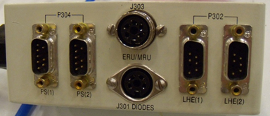

Connect the 4-pin Lemo Connector P2 end of Cable 2128699 (Run 606) to J2 the Primary MRU, located behind the MRU's cover.
Connect the 5-pin Switchcraft Connector P3 end of Cable 2128699 (Run 606) to J303 (ERU/MRU) on the Instrumentation Box at the magnet. See Illustration 5.
Illustration 5: Instrumentation Box
